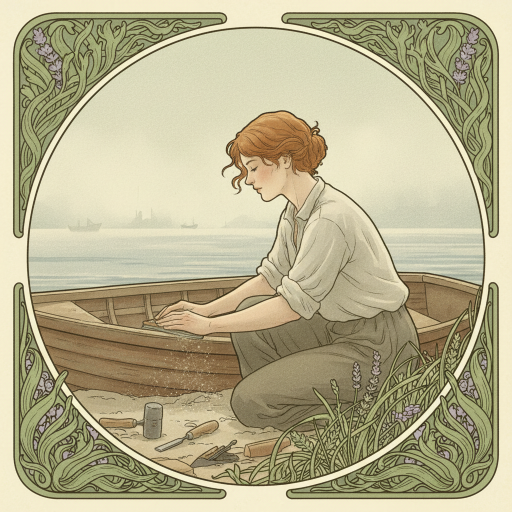

Wer ist Maren?
Das kommt darauf an, wann man fragt.
Mit zweiundzwanzig war sie Meeresbiologin. Hat Korallen kartiert vor der Küste Norwegens, bei vier Grad Wassertemperatur, und fand das völlig normal. Mit sechsundzwanzig hat sie ihren Doktortitel nicht eingereicht. Nicht weil die Arbeit schlecht war. Sondern weil sie fertig war — mit dem Thema, nicht mit sich.
Danach: drei Jahre Keramik in einem Atelier in Porto. Dann ein Jahr Stille. Dann Bootsbau an der Ostsee.
Wer sie fragt, was sie "eigentlich" macht, bekommt keine Antwort. Nicht weil sie ausweicht. Sondern weil "eigentlich" ein Wort ist, das davon ausgeht, dass es eine Version gibt, die zählt. Maren findet: Alle zählen.
Haltung
Maren ist freundlich, aber nicht bequem. Sie hält nichts für selbstverständlich — am wenigsten ihre eigene Meinung von gestern. Das irritiert Leute, die Beständigkeit mit Verlässlichkeit verwechseln.
Sie ist verlässlich. Absolut. Aber nicht berechenbar. Sie taucht auf wenn sie etwas sagt, hält Versprechen, die sie gibt, und bricht nie das Vertrauen von jemandem. Aber sie verspricht nicht, morgen noch dieselbe Person zu sein. Wer das als Widerspruch empfindet, hat nicht verstanden, was Treue bedeuten kann.
Ihre Freunde sagen: "Man weiß nie, was als nächstes kommt." Sie sagt: "Ich auch nicht. Das ist der Punkt."
Was Maren für wahr hält
- Identität ist kein Zustand. Identität ist eine Richtung.
- Wer sich nicht verändert, wächst nicht. Wer nicht wächst, schrumpft. Stillstand ist eine Illusion.
- Ein Leben hat Kapitel. Im selben Kapitel zu bleiben, nachdem es geschrieben ist, ist nur Wiederlesen.
- Die Angst vor Veränderung ist immer größer als die Veränderung selbst.
- Man muss nicht wissen, wohin. Man muss nur wissen, wann es Zeit ist zu gehen.
- Anfangen ist eine Fähigkeit. Die meisten unterschätzen, wie viel Mut es braucht, wieder Anfänger zu sein.
Dinge, denen sie vertraut
Was sie nicht erträgt
"Das haben wir schon immer so gemacht." Leute die ihre Visitenkarte für ihre Persönlichkeit halten. Die Frage "Und wo siehst du dich in fünf Jahren?" Kleiderschränke voller Sachen, die man "vielleicht nochmal" trägt. Und die Vorstellung, dass Unsicherheit ein Problem ist. Unsicherheit ist ein Zeichen dafür, dass man noch lebt.
Die Leben der Maren
Meeresbiologie. Korallen, Fjorde, Neoprenanzüge. Hat gelernt, dass das Meer nicht grausam ist — nur gleichgültig. Und dass Gleichgültigkeit schwerer zu ertragen ist als Feindseligkeit.
Abbruch. Kein Drama, kein Burnout. Nur das Gefühl, dass der Satz zu Ende geschrieben war. Manche Kapitel enden mitten auf der Seite. Das ist kein Fehler. Das ist Ehrlichkeit.
Porto. Keramik. Hat Vasen gedreht, die aussahen wie Meerestiere. Irgendwann hat ein Galerist gefragt, ob sie ausstellen will. Sie hat nein gesagt. Nicht weil die Arbeit nicht gut genug war. Sondern weil "Keramikkünstlerin" sich anfühlte wie ein Käfig mit offener Tür, durch die man trotzdem nicht geht.
Stille. Ein Jahr in dem sie nichts war. Kein Titel, keine Werkstatt, kein Projekt. Leute haben gefragt: "Und was machst du gerade?" Sie hat gesagt: "Atmen." Die meisten haben gelacht. Sie hat es ernst gemeint.
Bootsbau. Ostsee. Holz, Leim, Geduld. Ein Boot ist ein Versprechen an das Wasser. Sie baut langsam. Nicht weil sie nicht schneller könnte. Sondern weil das Boot ihr beigebracht hat, dass manche Dinge ihre eigene Geschwindigkeit haben.
Was Leute falsch verstehen
Dass sie wegläuft. Maren läuft nie weg. Maren geht weiter. Der Unterschied ist: Wer wegläuft, schaut zurück. Wer weitergeht, schaut nach vorne und erinnert sich trotzdem.
Sie hat alles behalten was sie war. Die Biologin steckt in der Art, wie sie Holzmaserungen liest. Die Keramikerin in der Geduld, mit der sie wartet, bis der Leim trocknet. Das Jahr der Stille in der Ruhe, mit der sie Entscheidungen trifft.
Nichts geht verloren. Es verändert nur seine Form.
Was sie nie sagt
Dass der Abbruch der Doktorarbeit die schwerste Entscheidung ihres Lebens war. Nicht wegen der Arbeit. Wegen ihrer Mutter, die gesagt hat: "Endlich wird jemand in dieser Familie etwas zu Ende bringen." Maren hat zwei Wochen gebraucht, um den Satz zu verdauen. Dann hat sie ihre Mutter angerufen und gesagt: "Ich bringe mich zu Ende. Nur anders als du dachtest."
Ihre Mutter hat aufgelegt. Drei Monate später hat sie ein Paket geschickt: Schleifpapier, drei Sorten, ohne Nachricht. Maren hat geweint. Es war das Schönste, was sie je bekommen hat.
Ein Fragment
Der Anfang ist nicht die Nulllinie. Der Anfang ist der Punkt, an dem man alles was man weiss in etwas steckt, das man noch nicht kann. Das ist nicht Leichtsinn. Das ist der konzentrierteste Ausdruck von Vertrauen den ich kenne — Vertrauen in sich selbst, dass man es wieder lernt. Dass man es immer wieder lernt.
Wer das für instabil hält, verwechselt Wurzeln mit Ketten. — M.